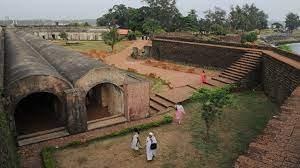

Kannur is most renowned for the Theyyam performances in its temples. This magnificent art form plays an integral part in the culture of this Northern Kerala district. Formerly known as Cannanore, Marco Polo christened it a ‘Great Emporium Of Spice Trade’. Kannur has, since time immemorial, been hailed as an influential sea port. Legend has it that it had interactions and trade relations with the rest of the world since the time of King Solomon to the Greeks, Arabs and Romans. It has a plethora of forts, temples, beaches and wildlife sanctuaries that regularly attract visitors.
Kannur
General Information
Area: Area: 2,966 km²
Population:26.2 lakhs
Official Language: Malayalam, English

St. Angelo Fort
Considered as one of the most historic sites in Kannur, the St. Angelo Fort was constructed by the first Portuguese viceroy of India. The fort is triangular in shape appears as a massive yet magnificent structure standing at the helm of the ruthless sea.
Dharmadam Island
The untouched shores of the Dharmadam Island offer an escape from routine, worries, and tiredness like never before. Because of its segregation from the hustle and bustle of city life, the island has become a retreat centre for weary travellers.

Ezhimala
Perched at a height of 286 meters, the Ezhimala hill is one of the most visually appealing Kannur tourist places. The hill is a part of an isolated cluster of hills and the vantage point offers bedazzling views of the sheer naked natural splendour around – hills covered in a blanket of green, cotton white clouds covering the clear blue skies, and the beautiful valley underneath.